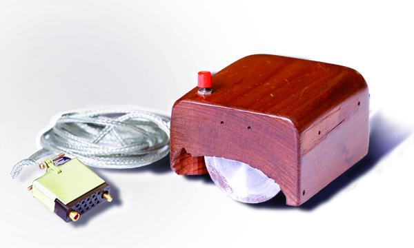

Douglas Engelbart is most famous for his creation of the mouse. In 1963, he started a research lab called the Augmentation Research Center. They created something called NLS (oNLine System). This was the first successful implementation of hypertext and it used the mouse to facilitate computer interaction.
